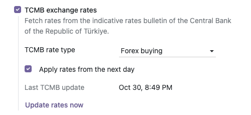
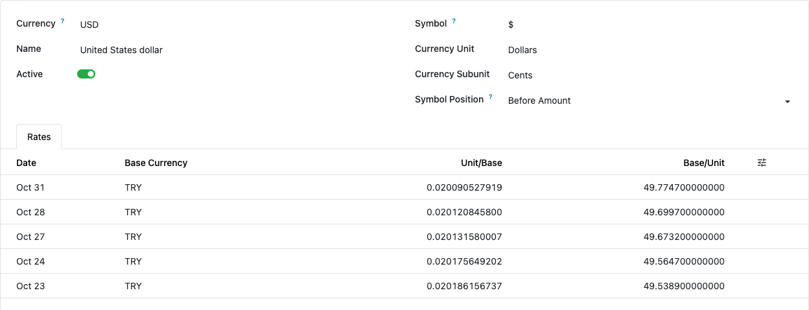

Keep your currency rates up to date with the official indicative rates of the Central Bank of the Republic of Türkiye (TCMB). Works on Odoo Community.
The module downloads the public daily bulletin (today.xml) from the website of the
Central Bank of the Republic of Türkiye. No company or personal data is sent; the request only
retrieves the bulletin. The scheduled action runs every 3 hours.


USD rates from the TCMB bulletins of 22–30 October 2026, saved with the next-day rule.
Odoo 19.0 and 20.0 (tested on Community). Depends only on account.
Licensed under LGPL-3. Questions and bug reports:
destek@odoo-tr.com
Döviz kurlarını her gün TCMB gösterge kurları bülteninden otomatik günceller. Odoo Community sürümünde çalışır; modülün ekranları Türkçe arayüzde Türkçe görünür.
Kullanım: Faturalama / Muhasebe > Yapılandırma > Ayarlar > Para Birimleri bölümünde TCMB döviz kurları'nı açın, kur türünü seçin ve Kurları şimdi güncelle'ye basın. Zamanlanmış görev 3 saatte bir çalışır.
Dış servis: modül TCMB'nin internet sitesinden herkese açık günlük bülteni indirir; şirket ya da kişi verisi gönderilmez.
Sorular ve hata bildirimleri: destek@odoo-tr.com